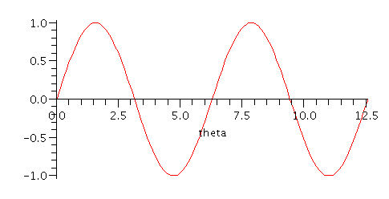
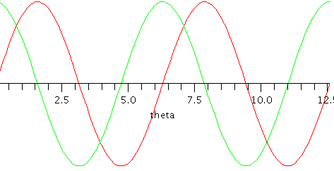
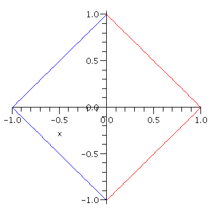
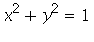
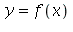
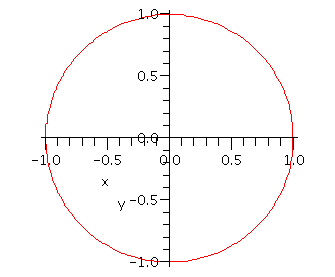
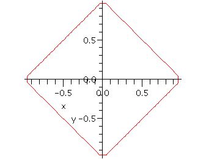
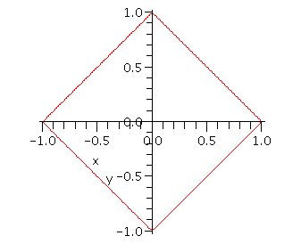

| > | restart; |
Graphics
A basic plot of an expression:
| > | plot( sin(theta), theta=0..4*Pi ); |

A lot of options are available by right-clicking a graph or using the second row of buttons at the top of the window after a graph has been clicked.
Give a list of expressions to get multiple curves.
| > | plot( [sin(theta),cos(theta)], theta=0..4*Pi ); |

A more flexible way to get multiple curves is to use the display command. This command, like many, lies in an external package that first has to be loaded using with:
| > | with(plots): |
The colon at the end of a command is an alternative to the semicolon. It prevents output from being displayed, which is what you want using with.
To combine separate plots, assign the results of plot commands to names and then call display.
| > | p1:= plot( [1-x,-1+x], x=0..1, color=red ): |
| > | p2:= plot( [1+x,-1-x], x=-1..0, color=blue ): |
| > | display({p1,p2}); |

Implicit plotting
Some curves are more easily described by implicit equations. For example, a circle  cannot be represented by a single function , as it fails the vertical-line test. Instead, you can use implicitplot, also found in the plots package.
| > | implicitplot( x^2+y^2=1, x=-1..1,y=-1..1 ); |

If you stretch out the axes containing the circle above, it can actually look like an ellipse. To prevent this, add scaling=constrained as an argument to plot, or select it from the right-click menu of the figure.
The diamond above is easily recreated using
| > | implicitplot( abs(x)+abs(y)=1, x=-1..1,y=-1..1 ); |

Notice, however, that corners on the implicit plot are not as sharp as they should be. An extra argument can help.
| > | implicitplot( abs(x)+abs(y)=1, x=-1..1,y=-1..1, numpoints=8000 ); |
